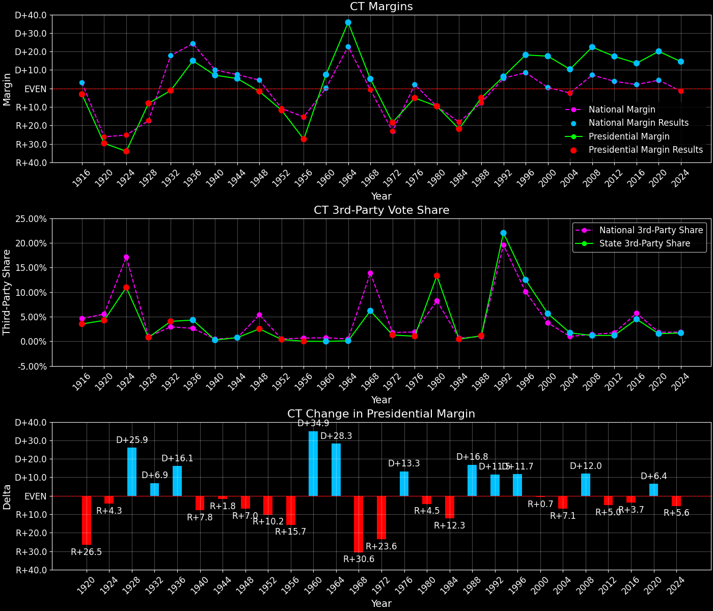
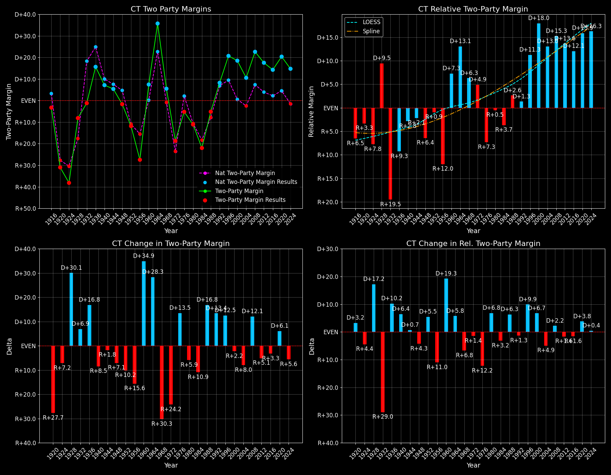

Connecticut (CT) — Statewide

Margins · 3rd-Party share · Pres. deltas

Relative margins · Relative 3rd-Party · Rel. deltas
Connecticut (CT) — Total Data
| Year | EVs | D | R | State Margin | Nat. Margin | Rel. Margin | Total votes |
|---|---|---|---|---|---|---|---|
| 1968 | 8 | 621,561(49.5%) | 556,721(44.4%) | D+5.2 | R+0.6 | D+5.8 | 1,254,932 |
| 1972 | 8 | 555,498(40.1%) | 810,763(58.6%) | R+18.4(Δ R+23.6) | R+23.5(Δ R+23.0) | D+5.1(Δ R+0.7) | 1,384,277 |
| 1976 | 8 | 647,895(46.7%) | 719,261(51.9%) | R+5.1(Δ D+13.3) | D+2.2(Δ D+25.7) | R+7.3(Δ R+12.4) | 1,386,355 |
| 1980 | 8 | 541,732(38.5%) | 677,210(48.2%) | R+9.6(Δ R+4.5) | R+9.9(Δ R+12.1) | D+0.3(Δ D+7.6) | 1,406,285 |
| 1984 | 8 | 569,597(38.8%) | 890,877(60.7%) | R+21.9(Δ R+12.3) | R+18.1(Δ R+8.2) | R+3.8(Δ R+4.1) | 1,466,900 |
| 1988 | 8 | 676,584(46.9%) | 750,241(52.0%) | R+5.1(Δ D+16.8) | R+7.7(Δ D+10.4) | D+2.6(Δ D+6.4) | 1,443,387 |
| 1992 | 8 | 682,318(42.2%) | 578,313(35.8%) | D+6.4(Δ D+11.5) | D+5.6(Δ D+13.3) | D+0.9(Δ R+1.8) | 1,616,332 |
| 1996 | 8 | 735,740(52.8%) | 483,109(34.7%) | D+18.1(Δ D+11.7) | D+8.6(Δ D+3.0) | D+9.6(Δ D+8.7) | 1,392,609 |
| 2000 | 8 | 816,015(55.9%) | 561,094(38.4%) | D+17.5(Δ R+0.7) | D+0.5(Δ R+8.0) | D+17.0(Δ D+7.4) | 1,459,471 |
| 2004 | 7 | 857,488(54.3%) | 693,826(43.9%) | D+10.4(Δ R+7.1) | R+2.5(Δ R+3.0) | D+12.8(Δ R+4.1) | 1,578,769 |
| 2008 | 7 | 997,772(60.6%) | 629,428(38.2%) | D+22.4(Δ D+12.0) | D+7.3(Δ D+9.7) | D+15.1(Δ D+2.3) | 1,646,797 |
| 2012 | 7 | 905,105(58.1%) | 634,899(40.7%) | D+17.3(Δ R+5.0) | D+3.9(Δ R+3.4) | D+13.5(Δ R+1.6) | 1,558,071 |
| 2016 | 7 | 897,572(54.6%) | 673,215(40.9%) | D+13.6(Δ R+3.7) | D+2.1(Δ R+1.8) | D+11.5(Δ R+1.9) | 1,644,912 |
| 2020 | 7 | 1,080,680(59.2%) | 715,291(39.2%) | D+20.0(Δ D+6.4) | D+4.4(Δ D+2.3) | D+15.6(Δ D+4.0) | 1,824,280 |
| 2024 | 7 | 992,053(56.4%) | 736,918(41.9%) | D+14.5(Δ R+5.5) | R+1.5(Δ R+6.0) | D+16.0(Δ D+0.5) | 1,759,010 |
Column explanations
- Δ
- Change (delta) in the value from the previous election year.
- Year
- Election year.
- EVs
- Number of electoral votes allocated to this state or unit.
- D
- Number of votes for the Democratic candidate (raw count(pct%)).
- R
- Number of votes for the Republican candidate (raw count(pct%)).
- State Margin
- Margin between the two major-party candidates, including third-party votes ((D - R)/total).
- Nat. Margin
- The national presidential margin for that year, including third-party votes ((D_total - R_total)/total_votes).
- Rel. Margin
- The presidential margin relative to the national presidential margin (Margin - Nat. Margin).
- Total votes
- Total voter turnout or ballots cast (when provided).
Connecticut (CT) — Third-Party Data
| Year | Other votes | State 3rd-Party Share | 3rd-Party Nat. Share | 3rd-Party Rel. Share |
|---|---|---|---|---|
| 1968 | 76,650(6.1%) | 6.11% | 13.59% | -7.48% |
| 1972 | 18,016(1.3%) | 1.30% | 0.09% | 1.21% |
| 1976 | 19,199(1.4%) | 1.38% | 0.33% | 1.05% |
| 1980 | 187,343(13.3%) | 13.32% | 6.98% | 6.35% |
| 1984 | 6,426(0.4%) | 0.44% | 0.12% | 0.32% |
| 1988 | 16,562(1.1%) | 1.15% | 0.21% | 0.94% |
| 1992 | 355,701(22.0%) | 22.01% | 19.23% | 2.77% |
| 1996 | 173,760(12.5%) | 12.48% | 9.68% | 2.80% |
| 2000 | 82,362(5.6%) | 5.64% | 3.65% | 1.99% |
| 2004 | 27,455(1.7%) | 1.74% | 0.84% | 0.90% |
| 2008 | 19,597(1.2%) | 1.19% | 1.38% | -0.19% |
| 2012 | 18,067(1.2%) | 1.16% | 1.62% | -0.46% |
| 2016 | 74,125(4.5%) | 4.51% | 5.54% | -1.03% |
| 2020 | 28,309(1.6%) | 1.55% | 1.84% | -0.29% |
| 2024 | 30,039(1.7%) | 1.71% | 1.88% | -0.17% |
Column explanations
- Year
- Election year.
- Other votes
- Number of votes for third-party (other) candidates (raw count(pct%)).
- State 3rd-Party Share
- Share of the vote received by third-party (other) candidates.
- 3rd-Party Nat. Share
- The national third-party share for that year (3rd-Party votes / total votes).
- 3rd-Party Rel. Share
- Third-party share relative to the national third-party share (3rd-Party share - Nat. 3rd-Party share).

Two-party margins · relative · deltas
Connecticut (CT) — Two-Party Data
| Year | 2-Party Margin | 2-Party Nat. Margin | 2-Party Rel. Margin |
|---|---|---|---|
| 1968 | D+5.5 | R+0.7 | D+6.2 |
| 1972 | R+18.7(Δ R+24.2) | R+23.6(Δ R+22.9) | D+4.9(Δ R+1.3) |
| 1976 | R+5.2(Δ D+13.5) | D+2.2(Δ D+25.8) | R+7.4(Δ R+12.3) |
| 1980 | R+11.1(Δ R+5.9) | R+10.6(Δ R+12.8) | R+0.5(Δ D+6.9) |
| 1984 | R+22.0(Δ R+10.9) | R+18.1(Δ R+7.5) | R+3.9(Δ R+3.4) |
| 1988 | R+5.2(Δ D+16.8) | R+7.8(Δ D+10.4) | D+2.6(Δ D+6.5) |
| 1992 | D+8.3(Δ D+13.4) | D+6.9(Δ D+14.7) | D+1.3(Δ R+1.3) |
| 1996 | D+20.7(Δ D+12.5) | D+9.5(Δ D+2.6) | D+11.3(Δ D+9.9) |
| 2000 | D+18.5(Δ R+2.2) | D+0.5(Δ R+8.9) | D+18.0(Δ D+6.7) |
| 2004 | D+10.5(Δ R+8.0) | R+2.5(Δ R+3.0) | D+13.0(Δ R+4.9) |
| 2008 | D+22.6(Δ D+12.1) | D+7.4(Δ D+9.8) | D+15.3(Δ D+2.2) |
| 2012 | D+17.5(Δ R+5.1) | D+3.9(Δ R+3.4) | D+13.6(Δ R+1.7) |
| 2016 | D+14.3(Δ R+3.3) | D+2.2(Δ R+1.7) | D+12.1(Δ R+1.6) |
| 2020 | D+20.3(Δ D+6.1) | D+4.5(Δ D+2.3) | D+15.8(Δ D+3.8) |
| 2024 | D+14.8(Δ R+5.6) | R+1.6(Δ R+6.1) | D+16.3(Δ D+0.5) |
Column explanations
- Δ
- Change (delta) in the value from the previous election year.
- Year
- Election year.
- 2-Party Margin
- Margin between the two major-party candidates, ignoring third-party votes ((D - R)/(D + R)).
- 2-Party Nat. Margin
- The national presidential margin for that year, including third-party votes ((D_total - R_total)/total_votes).
- 2-Party Rel. Margin
- The presidential margin relative to the national presidential margin (Margin - Nat. Margin).